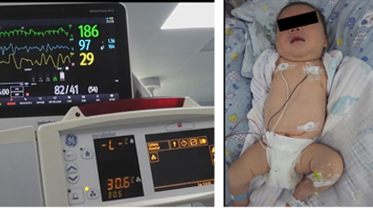
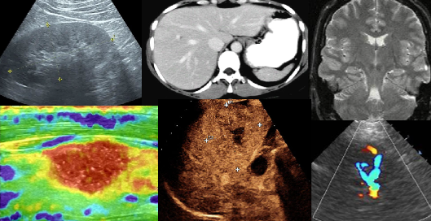
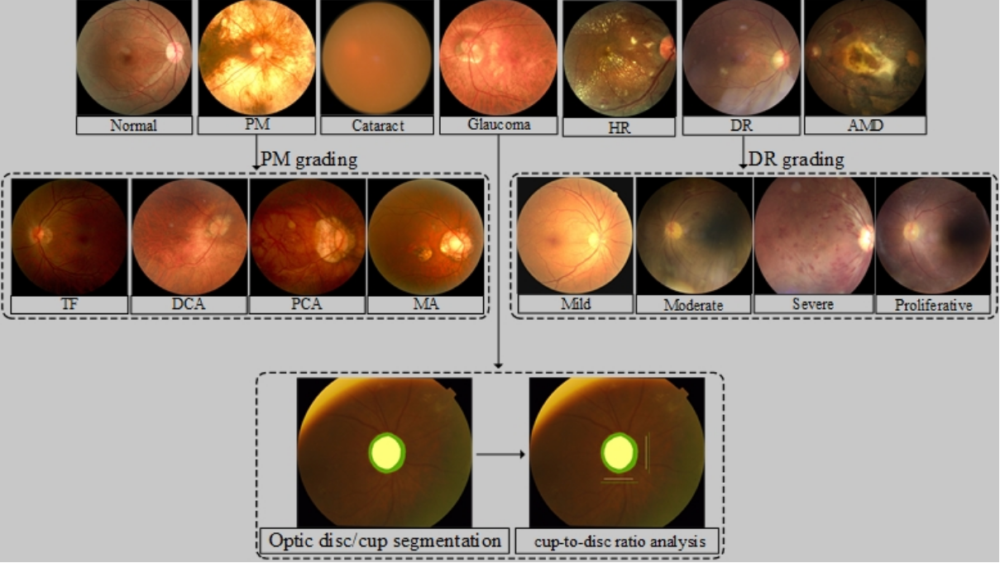

Research
The generalised electric medicine group is part of the Faculty of Applied Sciences of the Macao Polytechnic University and is dedicated to the research of new methods and technologies in the field of artificial intelligence and their application in various fields, such as medical imaging and healthcare field, physiological information field, and education field. Our goal is to develop computer algorithms to deal with and explain practical problems that exist in several fields.
Research lines
Click on any of the cards below to learn more about the research lines in GEM.

Multi-modality
Our research focuses on the intricate world of cross-organ, multi-modality imaging, delving into a diverse array of medical imaging techniques.

Image Quality Improvement of Mobile Ultrasound Devices
Mobile ultrasound devices play a vital role in emergency and family doctor services. However, the image quality of these devices, compared to traditional medical ultrasound equipment, leaves room for improvement.

Chest CT-IQA: A Multi-Task Model for Chest CT Image Quality Assessment
In recent years, especially during the COVID-19 pandemic,a large number of Computerized Tomography (CT) imagesare produced every day for the purpose of inspecting lung diseases.

Advanced U-Net for Multi-class Segmentation of Mammography
Detecting cancer in its early stages through accurate, efficient, and economical methods is essential to reduce its impact.

Non-contact physiological monitoring of newborn infants
Non-contact vital-sign estimation allows the monitoring of physiological parameters
放疗--谢晖和俊强
CT、PET---家驹

A hybrid supervised fusion deep learning framework for microscope multi-focus images
The quality of multi-focus microscopic image fusion hinges upon the precision of the image registration technology.

Breast cancer detection and diagnosis
The application of the computer-aided technology in medical imaging has achieved great success. We aim to research the computer-aided breast cancer detection and diagnosis on various kinds of medical images.

Multi-modality
Our research focuses on the intricate world of cross-organ, multi-modality imaging, delving into a diverse array of medical imaging techniques

Application of AI algorithms in diagnosis of fundus diseases
The application of artificial intelligence algorithms in the diagnosis of retinal diseases is progressively leading the transformation of the field of medicine.
Multi-modality
Our research focuses on the intricate world of cross-organ, multi-modality imaging, delving into a diverse array of medical imaging techniques